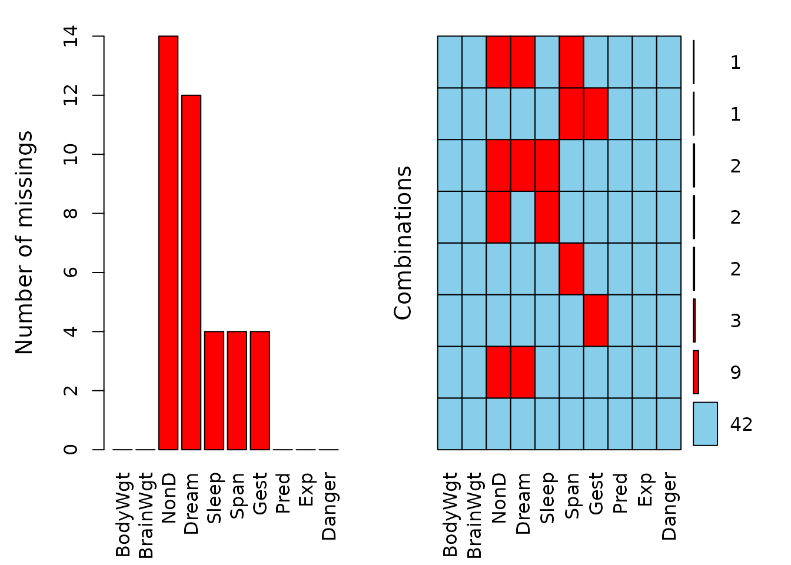
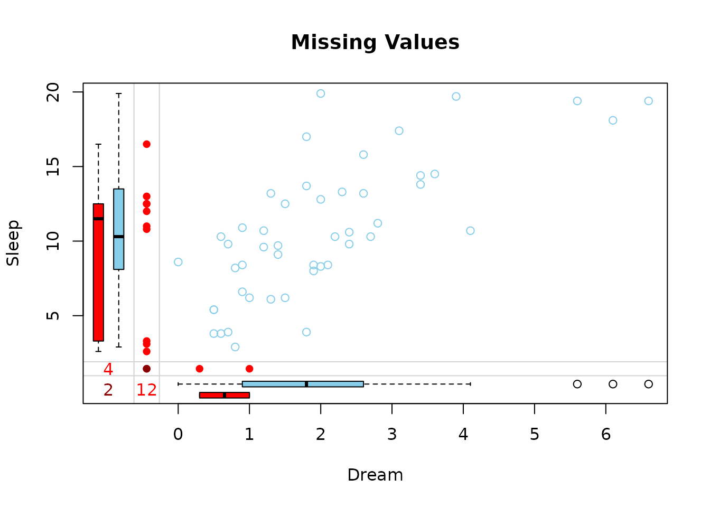

Introduction
This vignette documents vimpute() according to the
current implementation in R/vimpute.R.
vimpute() provides a flexible and robust way to impute
missing values in tabular data. It performs iterative, sequential
imputation, allowing later estimates to leverage earlier predictions.
The function supports multiple learners, including tree-based,
regularized, and robust regression methods, making it suitable for
numeric, categorical, or mixed data with complex relationships. Optional
features include predictive mean matching (PMM) for numeric targets,
formula-based modeling with transformations or interactions, factor
level handling, per-variable tuning, and convergence monitoring. Outputs
can include the imputed dataset, prediction histories, and tuning logs,
depending on the chosen settings.
Function Signature
vimpute(
data,
considered_variables = names(data),
method = setNames(as.list(rep("ranger", length(considered_variables))), considered_variables),
pmm = FALSE,
pmm_k = NULL,
learner_params = NULL,
formula = FALSE,
sequential = TRUE,
nseq = 10,
eps = 0.005,
imp_var = TRUE,
pred_history = FALSE,
tune = FALSE,
verbose = FALSE
)Arguments
-
data: input data (data.table) with missings. -
considered_variables: variables used in the imputation process. -
method: imputation learner.- single global method (for all variables with missings),
e.g.
"ranger" - named list per variable,
e.g.
list(Sleep = "xgboost", Dream = "robust") - supported:
"ranger","xgboost","regularized","robust"
- single global method (for all variables with missings),
e.g.
-
pmm: Predictive Mean Matching setting.- single
TRUE/FALSEglobally - named list per variable
- PMM is used only for numeric targets
- single
-
pmm_k: number of neighbors for PMM.- single integer globally
- named list per variable
-
NULL(default): usesk = 1where PMM is enabled, otherwiseNULL
-
learner_params: optional hyperparameters.- per variable
- per method (
ranger,xgboost,regularized,robust) - global fallback
-
formula:FALSE(default) or named list of formulas. -
sequential: ifTRUE, runs iterative imputation acrossnseqiterations. -
nseq: max number of iterations (default10). -
eps: convergence threshold for early stopping (default0.005). -
imp_var: ifTRUE, appends<var>_impindicator columns. -
pred_history: ifTRUE, returns prediction history. -
tune:TRUE/FALSEglobally or named list per variable.- tuning is attempted around
round(nseq / 2)for enabled variables
- tuning is attempted around
-
verbose: prints debug/progress messages.
Return Value
- Default return (
pred_history = FALSEandtune = FALSE): imputeddata.table. - If
pred_history = TRUEand/or anytuneentry isTRUE: returns a list with:-
data: imputed data - optional
pred_history - optional
tuning_log
-
Data
To demonstrate the function, the sleep dataset from the
VIM package is used.
data <- as.data.table(VIM::sleep)
a <- aggr(sleep, plot = FALSE)
plot(a, numbers = TRUE, prop = FALSE)
The left plot shows the amount of missings for each column in the dataset sleep and the right plot shows how often each combination of missings occur. For example, there are 9 rows which contain a missing in both NonD and Dream.
dataDS <- sleep[, c("Dream", "Sleep")]
marginplot(dataDS, main = "Missing Values")
The red boxplot on the left shows the distribution of all values of Sleep where Dream contains a missing value. The blue boxplot on the left shows the distribution of the values of Sleep where Dream is observed.
Basic Usage
Default run
In the basic usage, the vimpute() function performs
imputation using the default settings.
res <- vimpute(data = data)
print(head(res, 3))
#> BodyWgt BrainWgt NonD Dream Sleep Span Gest Pred Exp Danger NonD_imp
#> <num> <num> <num> <num> <num> <num> <num> <num> <num> <num> <lgcl>
#> 1: 6654.000 5712.0 3.5 1.3 3.3 38.6 645 3 5 3 TRUE
#> 2: 1.000 6.6 6.3 2.0 8.3 4.5 42 3 1 3 FALSE
#> 3: 3.385 44.5 10.7 2.3 12.5 14.0 60 1 1 1 TRUE
#> Dream_imp Sleep_imp Span_imp Gest_imp
#> <lgcl> <lgcl> <lgcl> <lgcl>
#> 1: TRUE FALSE FALSE FALSE
#> 2: FALSE FALSE FALSE FALSE
#> 3: TRUE FALSE FALSE FALSEResults and information about missing/imputed values can be shown in the plot margins:
dataDS <- as.data.frame(res[, c("Dream", "Sleep", "Dream_imp", "Sleep_imp")])
marginplot(dataDS, delimiter = "_imp", main = "Imputation with Default Model")
The default output is the imputed dataset and the prediction history.
In this plot three different colors are used in the top-right. These colors represent the structure of missings.
-
brown points represent
values where
Dreamwas missing initially -
beige points represent
values where
Sleepwas missing initially -
black points represent values where both
DreamandSleepwere missing initially
Include prediction history
This example demonstrates how to enable and inspect the prediction history, which records the model estimates for each iteration of the imputation process.
res_hist <- vimpute(
data = data,
pred_history = TRUE
)
ph <- res_hist$pred_history
n <- nrow(ph)
if (n >= 15) {
first <- ph[1:5, ]
middle <- ph[(floor(n/2)-2):(floor(n/2)+2), ]
last <- ph[(n-4):n, ]
print(first)
cat("\n...\n...\n...\n\n")
print(middle)
cat("\n...\n...\n...\n\n")
print(last)
} else {
print(ph)
}
#> iteration variable index predicted_values
#> <int> <char> <int> <num>
#> 1: 1 NonD 1 3.3
#> 2: 1 NonD 3 11.2
#> 3: 1 NonD 4 12.1
#> 4: 1 NonD 14 3.5
#> 5: 1 NonD 21 5.7
#>
#> ...
#> ...
#> ...
#>
#> iteration variable index predicted_values
#> <int> <char> <int> <num>
#> 1: 5 Gest 19 220.3
#> 2: 5 Gest 20 90.1
#> 3: 5 Gest 56 32.6
#> 4: 6 NonD 1 3.5
#> 5: 6 NonD 3 10.8
#>
#> ...
#> ...
#> ...
#>
#> iteration variable index predicted_values
#> <int> <char> <int> <num>
#> 1: 10 Span 36 6.8
#> 2: 10 Gest 13 40.9
#> 3: 10 Gest 19 220.2
#> 4: 10 Gest 20 96.8
#> 5: 10 Gest 56 31.5Method Configuration
Specifies the machine learning method used for imputation of each
variable: - "robust": Robust regression
models
- lmrob for numeric variables: Implements MM-estimation for
resistance to outliers - glmrob for factors: Uses robust
estimators to reduce outlier influence -
"regularized": Regularized regression
(glmnet)
- Uses elastic net regularization
- Automatically handles multicollinearity
- "ranger": Random Forest
- Fast implementation of random forests
- Handles non-linear relationships well
- "xgboost": Gradient Boosted Trees
- State-of-the-art tree boosting
- Handles mixed data types well
Global method
Using a single global method applies the same imputation strategy to all variables with missing values. This is convenient when a consistent modeling approach is desired and simplifies configuration.
res_xgb <- vimpute(
data = data,
method = "xgboost"
)PMM Configuration
Predictive Mean Matching (PMM) is an optional technique used to preserve the original data distribution when imputing numeric variables. Instead of directly predicting missing values, PMM selects observed values that are close to the predicted value, ensuring that imputed values remain realistic and consistent with the observed data.
Global PMM with global pmm_k
Enabling PMM globally applies the same predictive mean matching
approach to all numeric variables. The pmm_k parameter
controls the number of closest observed values considered for
imputation.
res_pmm <- vimpute(
data = data,
pmm = TRUE,
pmm_k = 3
)Variable-specific PMM
For more fine-grained control, PMM can be enabled on a per-variable
basis. This allows some variables to use standard model-based imputation
while others benefit from PMM. Additionally, pmm_k can be
specified individually for each variable, adjusting the number of
nearest neighbors used for imputation depending on the variable’s
characteristics or distribution.
Hyperparameter for chosen method
The learner_params argument allows passing
hyperparameters to the underlying learner. Parameters can be defined
globally, per variable, or per method.
Global learner param
Global parameters are applied to all variables using the same method, unless more specific settings are provided.
Tuning
vimpute() supports hyperparameter tuning to optimize
model performance during imputation. By enabling
tune = TRUE, the function will search for optimal settings
for the chosen learners, which can improve prediction accuracy and the
quality of imputed values.
Iterative Settings
Imputation in vimpute() is iterative by default
(sequential = TRUE), meaning missing values are updated
across multiple passes to refine predictions. The number of iterations
(nseq) and the convergence threshold (eps) can
be adjusted
res_iter <- vimpute(
data = data,
sequential = TRUE,
nseq = 20,
eps = 0.01
)If sequential = FALSE, nseq is internally
reduced to 1.
Restricting Variables
vimpute() allows you to restrict the imputation process
to a subset of variables. This is useful when you want to focus only on
certain key variables, reduce computation time, or avoid imputing
variables that are complete or less relevant.
res_subset <- vimpute(
data = data,
considered_variables = c("Sleep", "Dream", "Span", "BodyWgt"),
method = "ranger"
)Only considered_variables are used in the imputation
workflow.